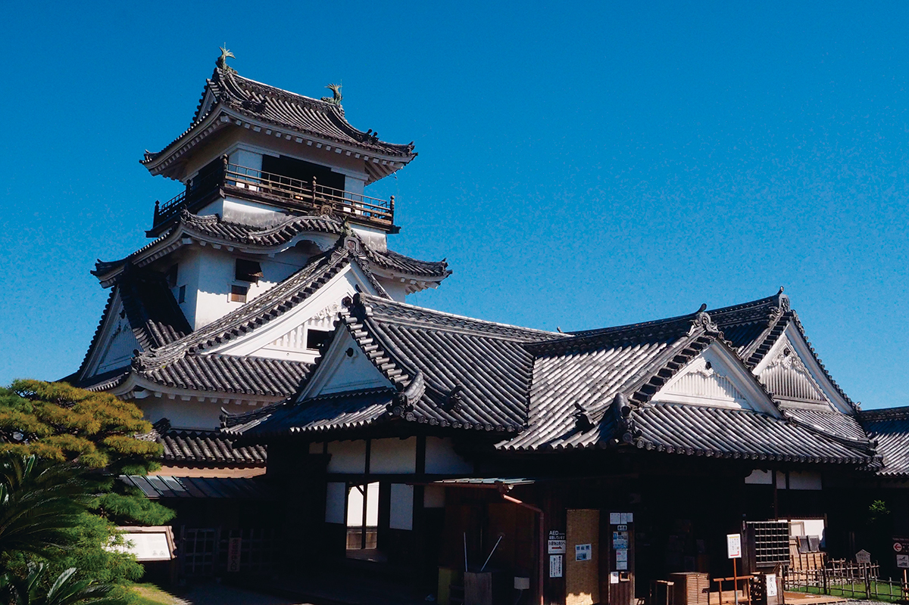
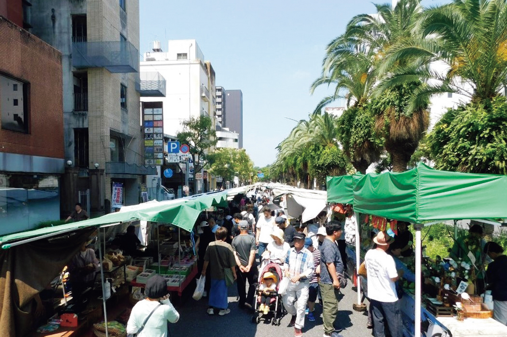
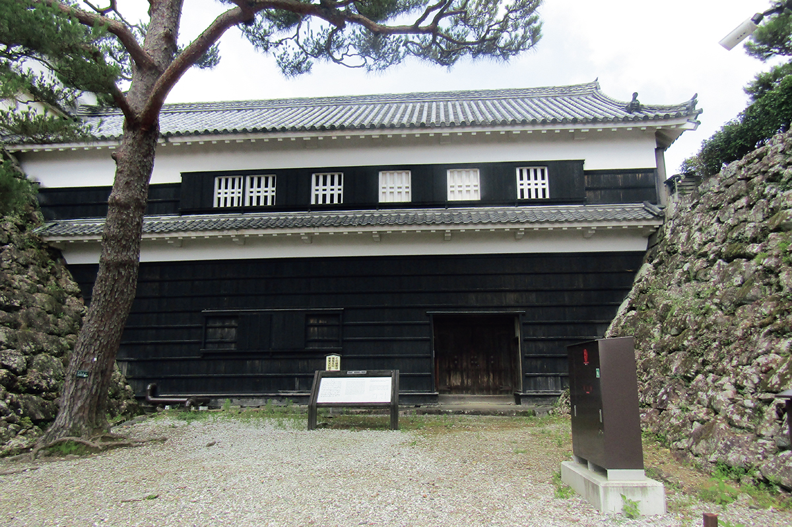
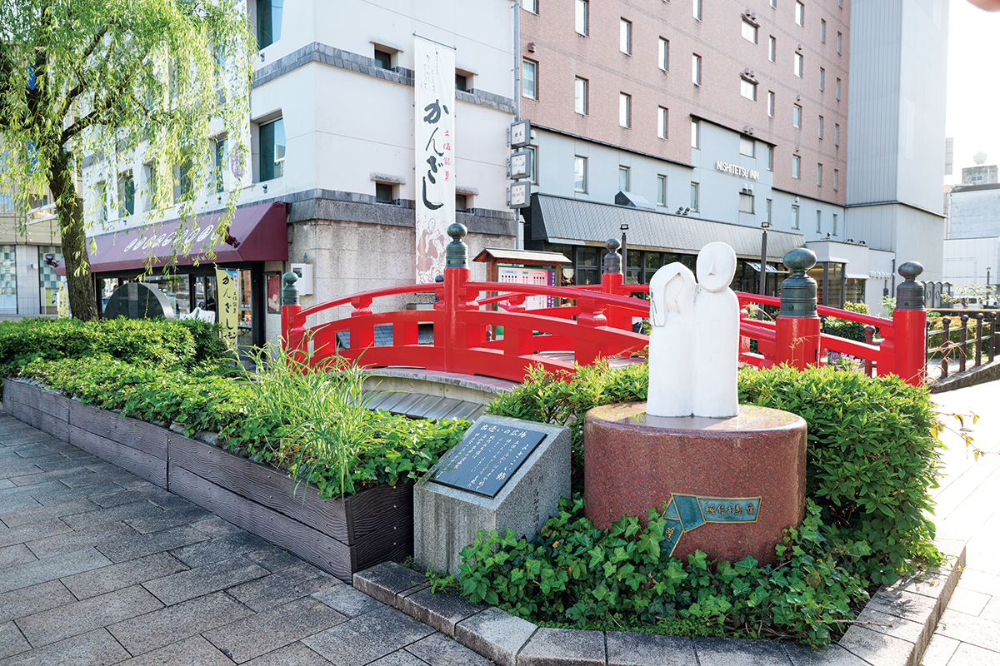
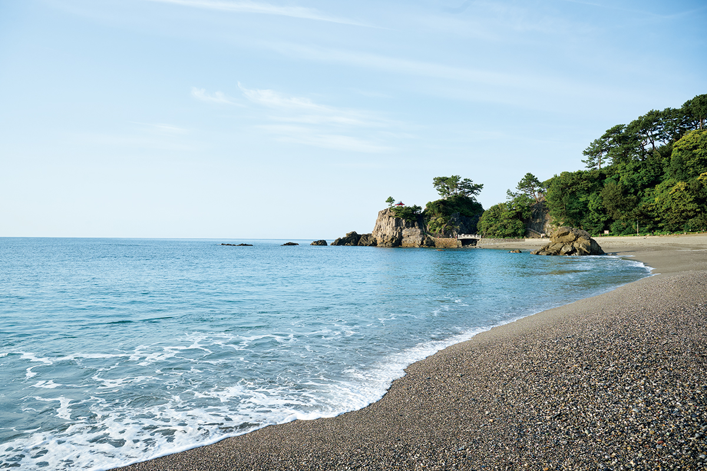
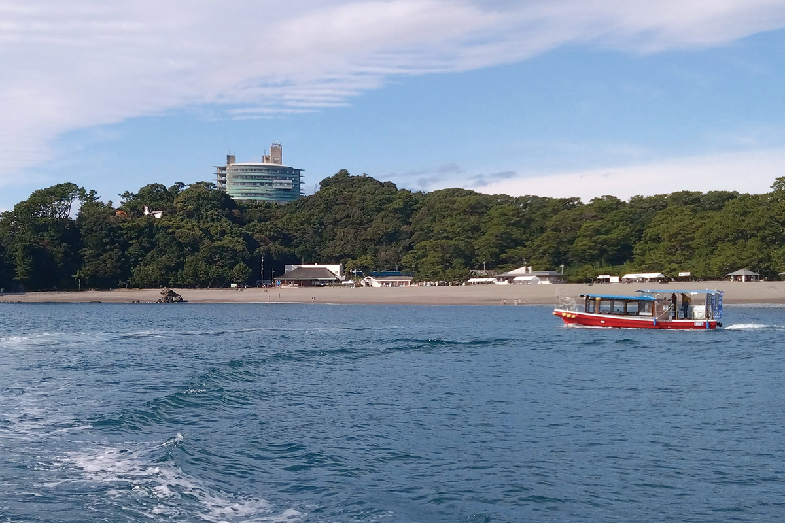

Префектура Коти · город Коти · маршрут по песне ёсакой
Три адреса из песни ёсакой: замок Коти, мост Харимая и пляж Кацурахама

Песню ёсакой-наруко-одори здесь знают наизусть: её куплеты перечисляют главные места Коти. Мы прошли по трём адресам из текста и убедились, что город танцует и без музыки.
Маршрут
Песня, которая стала картой города
Слова для главного танца префектуры собирал композитор Эйсаку Такэмаса (1907–1982), который жил в Коти. Он объездил Коти, записывал детские песни и деревенские напевы, а за основу взял местную ёсакой-буси, добавив тосский возглас «ёттёрэё»: так просят уступить дорогу.
В куплетах встречаются замок, мост, морской берег, и текст играет с географией: местечко Мимасэ в песне созвучно с «гляди», а Урадо с «отвори». Адреса стоят близко друг к другу, поэтому маршрут по песне получается компактным, его хватает на один насыщенный день.
Адрес первый
Замок Коти: город, который танцует триста лет
В первом куплете поётся: „Приезжай в замковый город Коти, здесь и люди, и лошади пляшут во весь дух“. Замок и правда держит город на себе. Уже триста лет, с эпохи Эдо, у его подножия работают уличные рынки, четыре раза в неделю; главный из них, воскресный, занимает улицу Отэсудзи примерно на километр к востоку и к западу от ворот Отэмон. В 2026 году исполняется 150 лет с тех пор, как после перехода Японии на солнечный календарь рынки стали проводить по дням недели.

Сам замок построил в 1601 году Кадзутоё Ямаути (1546–1605), первый даймё княжества Тоса. Военачальник эпохи Сэнгоку, он служил Оде Нобунаге и Тоётоми Хидэёси, а после битвы при Сэкигахаре в 1600 году получил во владение Тосу. Это единственная крепость страны, где ансамбль построек внутреннего двора сохранился целиком. Оборону здесь продумали до мелочей: на стенах заметны ловушки-„камнепады“ (исиотоси) и щиты с бойницами для лучников (яадзумабэй). С вершины донжона просматривается весь город. Каждый вечер, с заката до десяти, замок подсвечивают, и ночной Коти стоит того, чтобы вернуться. На время Ёсакой у замка ставят сцену с помостом-ханамити, и крепость снова оказывается в самом центре праздника.

Замок Коти
- Адрес
- префектура Коти, город Коти, Маруноути, 1-2-1
- Телефон
- +81 88-824-5701
- Часы работы
- 9:00–17:00 (вход до 16:30)
- Выходные
- с 26 декабря по 1 января
- Цены
- 500 иен, до 18 лет бесплатно
Адрес второй
Мост Харимая: монах, гребень и запретная любовь
Мост Харимая стоит в самом центре города. В песне поётся, что на нём видели монаха, покупавшего гребень-кандзаси. За строчкой стоит целая любовная история: Дзюнсин, монах храма Тикуриндзи, полюбил девушку по имени Омэ. Пара сбежала, но их разлучили, и эта грустная сказка до сих пор живёт в городе. На Ёсакой строчку про гребень охотно вставляют в свои номера команды со всей префектуры.
Сам мост в эпоху Эдо был частным: он соединял усадьбы двух богатых купцов по берегам канала Хорикава. Сегодня у моста стоит памятник влюблённым, а рядом торгуют тосской сладостью «кандзаси», названной в честь той самой покупки.

Мост Харимая
- Адрес
- префектура Коти, город Коти, Харимаятё, 1-1
Адрес третий
Кацурахама: берег, воспетый луной
Второй куплет уводит к морю: „Покажем тебе Мимасэ, отвори Урадо, а лунное место здесь одно, Кацурахама“. Пляж дугой выгнут к Тихому океану и давно славится как место любования луной: в названии закреплён иероглиф «кацура», название дерева, которое по старому поверью считали растением луны.

На берегу стоит бронзовый Рёма Сакамото (1836–1867), смотрящий на море: самурай из Тосы и один из национальных героев Японии, он сыграл важную роль в падении сёгуната Токугава; рядом святилище и смотровые площадки, а чуть дальше аквариум, мемориальный музей и лавки. По заливу ходит и прогулочная лодка: рейс из Урадо длится около часа двадцати и проходит под мостом Урадо, откуда пляж виден с воды.

Городская прогулочная лодка Коти
- Телефон
- +81 80-6286-2847
- Часы работы
- рейсы в 10:30, 13:00 и 15:00
- Выходные
- будни (в период длинных праздников рейсы есть)
- Цены
- 3 500 иен
К третьему куплету маршрут замыкается: замок, мост и берег складываются в один день, а город поёт их без остановки.
Фото: Саюри Оно.